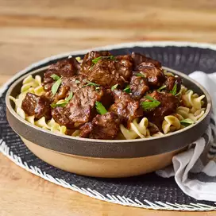

Beef Tips

Description
Tender chunks of beef are simmered low and slow with a flavorful gravy.
Ingredients
- 2 pounds cubed beef stew meat
- 3 tablespoons vegetable oil
- 2 teaspooons minced garlic
- 2 teaspoons minced onion
- 1 teaspoon salt
- 1 teaspoon pepper
- 1 teaspoon red pepper flakes
- 2 cups flour
- 1/4 cup soy sauce
- 1/4 cup worcestershire sauce
- 2 cups water
Steps
- Season beef with salt, pepper, and red pepper flakes.
Dredge beef in flour and set to side. (A little excess flour is fine, it will help with the gravy)
- Heat oil in large skillet over high heat. Add onion and garlic, sautee until browned, about 3 minutes.
- Add meat to skillet and cook, stirring occasionally until browned on all side,
about 3 to 5 minutes.
- Pour 2 cups water, soy sauce, and Worcestershire sauce into the skillet.
Bring to a boil. Reduce the heat to medium low, cover, and simmer until meat is tender, stirring occasionally, for about 1 1/2 to 2 hours.
Home